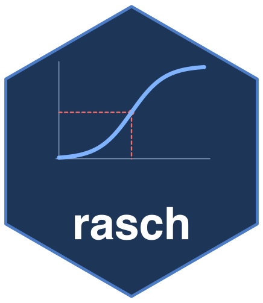

Experimental residual dimensionality of paired comparisons
Source:R/btl-independence.R
btl_dimensionality.RdDecomposes the skew-symmetric matrix of observed-minus-expected pair log-odds into Gower's (1977) rotational planes, or bimensions. A large leading bimension indicates a structured cycle in the residual comparisons. Its strength is compared with simulations from the fitted one-dimensional model using the observed comparison counts.
Arguments
- fit
A paired-comparison fit from
btl.- reps
Model-simulated replicates for the noise reference; at least 20. Larger values give a more stable upper-tail reference.
- seed
Optional non-negative whole-number seed. The caller's random- number state is restored when the calculation finishes; see
rasch_rngfor generator support.- independent_comparisons
Logical or
NULL. Declare whether conditionally independent comparison outcomes may be assumed for the simulated reference. The defaultNULLassumes independence only for an unclustered ordinary BTL fit.FALSEwithholds inference;TRUEexplicitly enables the reference, subject to design guards.
Value
A list of class "rasch_btl_dim": bimensions (per
bimension: strength and share of residual size; the reference mean, 5
upper critical value, and the clears-the-reference flag are reported for the
leading bimension and NA for the rest);
coords (each object's position in the leading bimension plane, for
the residual map); leading_structured (whether bimension 1 clears
its reference); reference (the simulated mean, finite-simulation
5
exceedance count divided by one plus reps, together with the
effective independent_comparisons assumption); residual_matrix; and
notes. residual_method identifies the residual definition.
Details
This is an experimental diagnostic. The reference is conditional on the fitted point estimates because the model is not re-estimated in each replicate. Observed and fitted expected points are pooled over each object pair before their proportions are compared on the logit scale. A half-point correction is applied to both totals. This retains category thresholds, frame units and fitted position or history effects in the expectation. The same calculation is used in the simulations; exposure and carry-over expectations follow each draw's generated history. The fitted model must have converged.
This reference assumes conditionally independent comparison outcomes given
the fitted probabilities and any modeled history. It is not cluster-robust:
clustered calibration standard errors do not make this simulated reference
valid under general within-judge dependence. Judge-clustered and frame fits
therefore return a descriptive decomposition by default. Explicitly set
independent_comparisons = TRUE to request the model-conditional
independent-comparison reference as a sensitivity analysis.
Inference is withheld if any object pair is unobserved, or if an ordered analysis contains count-weighted rows whose within-row sequence is unavailable. It is also withheld when every judge receives essentially the same comparison sequence and an order effect is fitted, because order and residual structure are then confounded. The result is also withheld when no object pair has an observed position for more than one judge, because across-judge order variation cannot then be assessed. In these cases the observed decomposition remains available, but probabilities, critical values and the reference band are omitted. Any completed simulation draws are retained for descriptive inspection, not as an inferential reference.
References
Gower, J. C. (1977). The analysis of asymmetry and orthogonality. In J. R. Barra et al. (Eds.), Recent Developments in Statistics (pp. 109-123). North-Holland.
Examples
set.seed(1); objs <- LETTERS[1:6]; beta <- setNames(seq(-1.5, 1.5, len = 6), objs)
pr <- t(utils::combn(objs, 2))
d <- data.frame(a = rep(pr[, 1], each = 30), b = rep(pr[, 2], each = 30))
d$win <- ifelse(runif(nrow(d)) < plogis(beta[d$a] - beta[d$b]), d$a, d$b)
btl_dimensionality(btl(d, "a", "b", "win"), reps = 20)
#> Paired-comparison residual dimensionality: 3 bimension(s)
#> Leading bimension strength 1.281 (93% of residual; reference 5% upper limit: 2.746; adjusted p = 0.905) -> within the conditional reference
#> Note: the simulated reference assumes conditionally independent comparison outcomes given the fitted probabilities and any modeled history; it is not cluster-robust